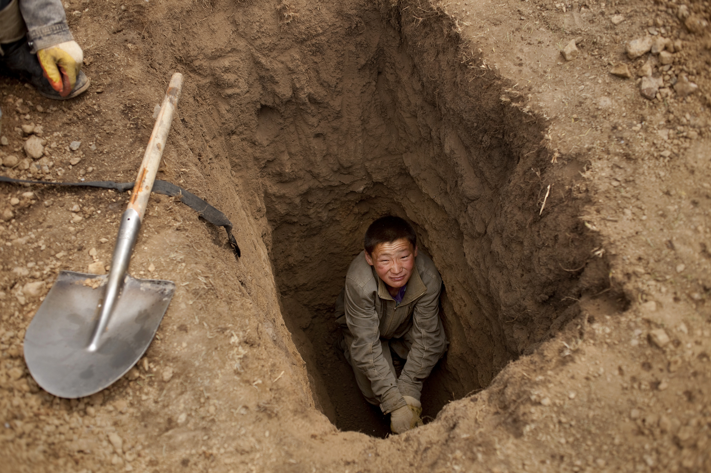

Introduction
Its huge gold reserves were only discovered after the former Soviet satellite started democratic reforms in 1990. Now, gold fever has gripped the country, with an estimated 100,000 Mongolians working as informal miners, many of them
herders who have left their flocks behind.
 A ninja miner pans for gold at a mine in Uyanga soum, Mongolia.
A ninja miner pans for gold at a mine in Uyanga soum, Mongolia.
But the work of these miners is causing untold damage to the environment.
Known as "ninja" miners — with their plastic gold-panning basins slung over their backs, they resemble TV's Teenage Mutant Ninja Turtles — they do not possess the necessary mining licenses and thus operate illegally.

A young ninja miner digs a small pit mine, just large enough for himself to look for the "gold dirt" - the dirt of a different shade that indicates it may have gold.
But they produce more gold than the formal industrial mining sector, which alone contributes more than 20 percent of Mongolia's gross domestic product. So by necessity, the government turns a blind eye to the ninja miners.
Purevsuren, left, and Dondog Tumur-chudur, in red, operate a simple sifting machine that separates smaller particulate from larger rocks at a gold mining site in Uyanga soum, Mongolia.
 Ninja miners walk to the site where they will dig for gold at a mine in Uyanga soum, Mongolia.
Ninja miners walk to the site where they will dig for gold at a mine in Uyanga soum, Mongolia.